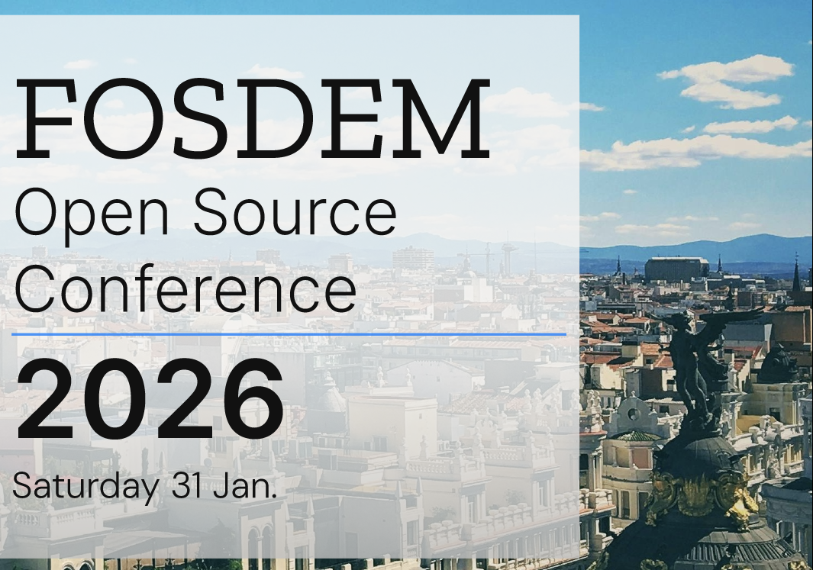
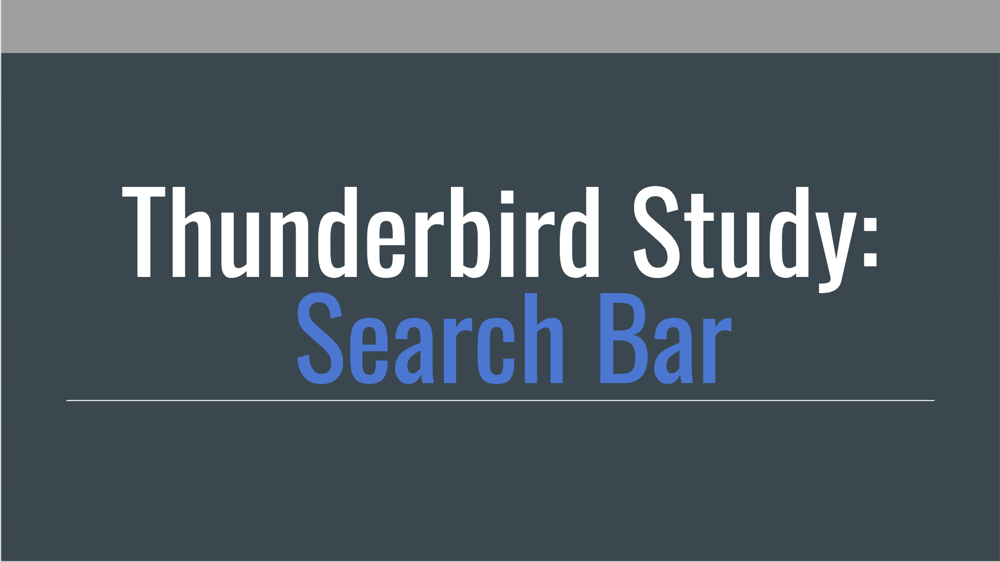
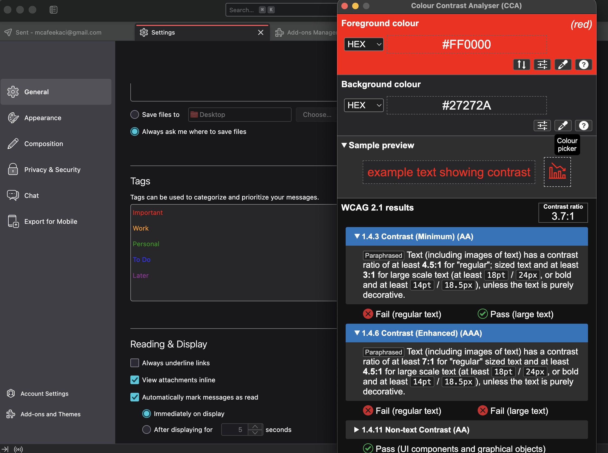

Skillset
Selected Projects

Thunderbird Design Suite: FOSDEM 2026
(In Progress)
A portfolio design suite created through an accessibility and UX lens, exploring promotional assets for the 2026 FOSDEM conference—including flyer, postcard, and sticker concepts—that prioritize inclusive design, clear hierarchy, and user-focused communication. These pieces demonstrate how accessibility considerations and thoughtful UI composition can shape event messaging while aligning with open-source and community-driven design principles.
*Expanded findings and implementation recommendations will be published upon completion of the design suite.
UX Study: Accessibility and Search in Thunderbird
A UX study through an accessibility lens exploring how assistive technology users interact with Thunderbird’s Global Search and email workflows. This study evaluated focus management, keyboard navigation, and text-to-speech functionality, with ongoing voice control testing. Findings were benchmarked against Gmail and Outlook to identify usability gaps in expected accessibility patterns—particularly for users navigating without a mouse.

UX Study: Accessibility and Settings in Thunderbird
(In Progress)
An ongoing accessibility and usability evaluation of Thunderbird’s Settings interface, focused on keyboard navigation, focus management, and assistive technology compatibility. This audit additionally examines how users interact with configuration workflows to identify friction points and opportunities for improved UI clarity and mouse-free navigation.
*Expanded findings and implementation recommendations will be published upon completion of the auditUI Study: Accessibility and Apple's "Liquid Design"
(In Progress)
An in-depth study of Apple’s Liquid Glass interface, examining UI interactions, motion, and layout while evaluating UX and accessibility. Findings will inform potential redesigns to improve usability, reduce friction, and create a more intuitive, inclusive experience.
*Expanded findings and implementation recommendations will be published upon completion of the audit
Website Commission: The Loft
(In Progress)
A responsive, user-focused portfolio site showcasing my front-end development and design work. The Loft emphasizes accessibility, clean UI, and intuitive navigation to highlight projects effectively. Work on interactive components and advanced UI features is ongoing, with full implementation planned for upcoming iterations.